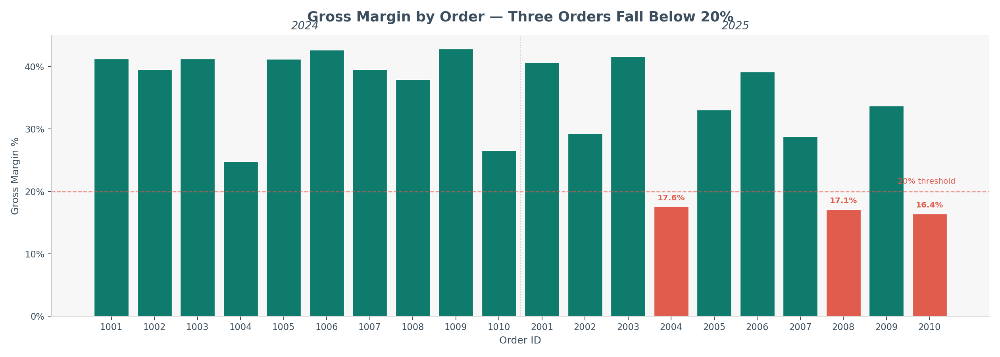
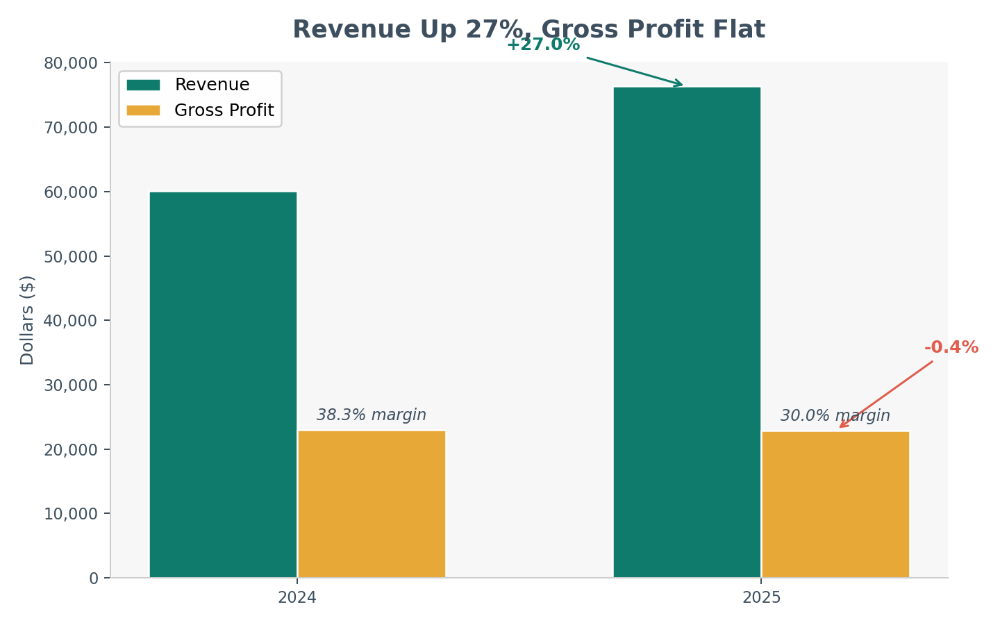
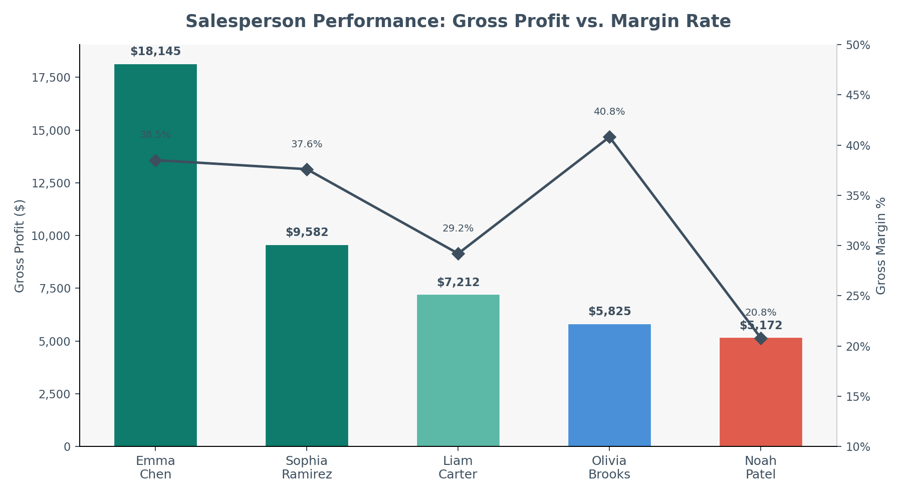
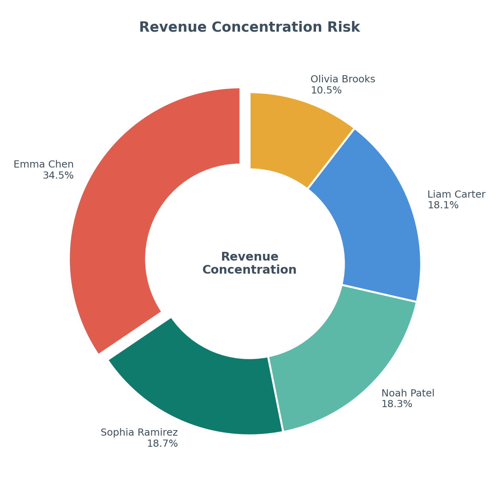
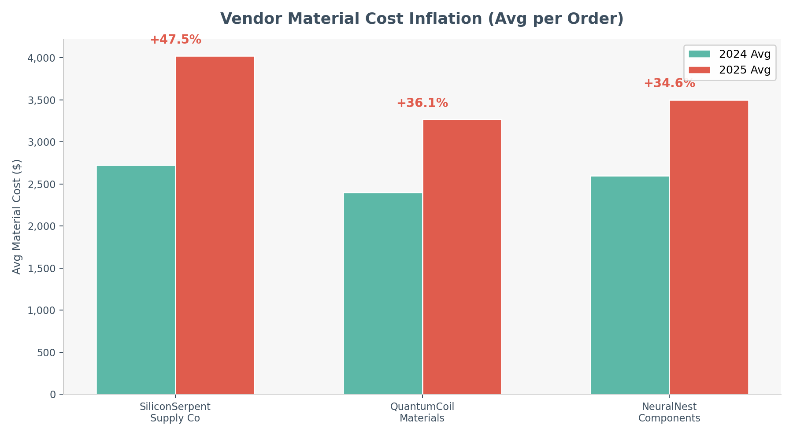

Your AI Co-Pilot for Accounting: A Hands-On Guide to Claude in VS Code
How two CSV files, plain English questions, and zero formulas revealed a margin crisis in under 10 minutes
By Svetlana Toohey Published March 2026
If someone told you a year ago that you could open two spreadsheets, type a question in plain English, and get a CFO-ready margin analysis in seconds -- you'd probably assume there was a catch.
There isn't.
AI coding assistants are changing how quickly we move from raw data to insight. And accountants are uniquely positioned to benefit.
You don't need to know Python to start. You don't need to be a developer.
You need to know what questions to ask.
That's something accountants have always done well.
This article walks through a real example step by step. By the end, you'll know how to try it yourself -- and how to grow beyond prompts into reusable systems.
What We're Working With
Tool: Claude, accessed through Copilot Chat in Visual Studio Code (VS Code). Data: Two CSV files. That's it.
A fictional company -- CodeCritters Inc. -- sells premium AI-themed desk fidgets. Three product lines:
- PyPal -- a friendly snake-shaped fidget coil ($108--$130)
- ByteBot -- an articulated robot desk companion ($170--$190)
- TensorTurtle -- a premium kinetic desk sculpture ($238--$270)
The data:
pythonmuse_orders_revenue.csv-- 20 orders across 2024--2025 with customer, product, quantity, price, and salespersonpythonmuse_orders_costs.csv-- matching cost records with vendor, material cost, labor employee, hours, and rates
No pivot tables. No VLOOKUP chains. No macros.
Just raw data and structured questions.
Getting Started
If you haven't set up your environment yet, start with the previous article: Where to Start If You're Ready to Work With AI. It walks through installing Visual Studio Code, Python, and connecting the core tools -- no developer experience required. If you're in a corporate environment that requires IT approval first, Getting the Right Tools Installed covers how to frame that conversation.
Once you have VS Code ready:
- Enable Claude in Copilot Chat -- open VS Code, go to the Copilot Chat panel, and select Claude from the model options at the bottom of the chat screen
- Create a project folder with your CSV files inside a
data_raw/subfolder - Open the folder in VS Code (File > Open Folder)
That's it. You're now talking to an AI that can read, analyze, and reason about your data -- right inside VS Code's chat panel.
The First Question: Orientation
You type:
Read the two CSV files in the data_raw folder and summarize
what we're working with -- time period, products, salespeople.
Claude responds:
20 orders. January 2024 through November 2025. Three products across three price tiers. Five salespeople. Five production employees. Three material vendors. Revenue and cost data linked by order ID.
In seconds.
Before you even open Excel, you understand the business structure.
That alone saves time every month.
Margin Analysis
Here's where accountants will sit up straight.
What you type:
Join the revenue and cost data on order_id.
Calculate gross profit and margin percentage.
Sort by lowest margin first.
What Claude finds:

Figure 1: Gross margin percentage by order. Red bars indicate orders below 20% -- all are TensorTurtle products sourced from SiliconSerpent Supply Co.Three orders fall below 20% margin:
| Order | Salesperson | Product | Revenue | COGS | Margin |
|---|---|---|---|---|---|
| 2010 | Noah Patel | TensorTurtle | $6,664 | $5,572 | 16.4% |
| 2008 | Liam Carter | TensorTurtle | $8,400 | $6,960 | 17.1% |
| 2004 | Noah Patel | TensorTurtle | $7,650 | $6,300 | 17.6% |
Same product. Same vendor. Same year.
That's not noise. That's a pattern.
Meanwhile, the healthiest margins (41--43%) belong to PyPal orders in 2024. The pattern is clear before we even ask the next question.
Before You Trust It: Validate
This is where accountants stay accountants.
Immediately follow with:
Show the exact formulas used for gross profit and margin.
Confirm totals tie back to the source files.
Then:
Spot-check a few rows. Recalculate one margin. Confirm totals.
AI accelerates analysis.
You still control validation.
That balance is what makes this professional -- not experimental.
The Number That Should Worry the CEO
What you type:
Compare 2024 vs 2025: total revenue, total COGS, gross profit, and
gross margin percentage. Is margin compressing?
What Claude finds:

Figure 2: Revenue grew 27% while gross profit stayed flat -- the classic "growing into lower profitability" pattern.| Metric | 2024 | 2025 | Change |
|---|---|---|---|
| Revenue | $60,099 | $76,344 | +27.0% |
| COGS | $37,082 | $53,425 | +44.1% |
| Gross Profit | $23,017 | $22,919 | -0.4% |
| Gross Margin | 38.3% | 30.0% | -8.3 pts |
Revenue: +27%. COGS: +44%. Gross profit: slightly down. Margin: down 8 points.
Revenue growth is masking profitability erosion.
That's advisory insight -- produced in under a minute.
The accounting insight: This is the difference between bookkeeping and advisory. The books show revenue is up. The analysis shows profitability is eroding. AI gets you to the analysis faster, so you spend your time on the advisory.
Sales & Vendor Patterns
You rank salespeople by gross profit:

Figure 3: Emma Chen dominates revenue and GP, but Olivia Brooks quietly posts the highest margin rate at 40.8%.| Rank | Salesperson | Revenue | Gross Profit | Margin |
|---|---|---|---|---|
| 1 | Emma Chen | $47,070 | $18,145 | 38.5% |
| 2 | Sophia Ramirez | $25,450 | $9,582 | 37.6% |
| 3 | Liam Carter | $24,724 | $7,212 | 29.2% |
| 4 | Olivia Brooks | $14,275 | $5,825 | 40.8% |
| 5 | Noah Patel | $24,924 | $5,172 | 20.8% |
Noah Patel's volume is misleading. He generates nearly the same revenue as Liam Carter ($24.9K vs $24.7K) but produces $2,000 less gross profit. His 20.8% margin is nearly half the company average.
Olivia Brooks is the quiet star. Fewest orders on the team, but the highest margin rate at 40.8%.
The concentration risk is real. Emma Chen represents 34.5% of total revenue. If she leaves, takes a medical leave, or her territory softens -- more than a third of the top line is at risk.

Figure 4: Revenue concentration by salesperson. Emma Chen at 34.5% represents material key-person risk.You compare vendor cost inflation:

Figure 5: All three vendors show cost inflation, but SiliconSerpent Supply Co. leads at nearly 48% year-over-year.| Vendor | 2024 Avg | 2025 Avg | YoY Increase |
|---|---|---|---|
| SiliconSerpent Supply Co | $2,725 | $4,020 | +47.5% |
| QuantumCoil Materials | $2,400 | $3,267 | +36.1% |
| NeuralNest Components | $2,600 | $3,500 | +34.6% |
You ask about labor hours per unit. 2024 averaged 0.80 hours per unit. 2025 averages 0.99 -- a 24% increase in production time.
The story forms:
Vendor cost increases
--> Product margin compression
--> Flat gross profit
--> Revenue growth hiding underlying weakness
You didn't build a dashboard.
You asked structured questions.
Asking the Strategic Question
What you type:
Based on everything you've analyzed, give me a 5-point executive
summary with recommended actions for CodeCritters management.
What Claude produces:
Margin compression is the headline, not revenue growth. Gross margin declined from 38.3% to 30.0% despite a 27% revenue increase. Costs are outpacing pricing power.
Renegotiate or replace SiliconSerpent Supply Co. Material costs from this vendor are up 48% YoY and they supply the most margin-impaired product line.
Reprice TensorTurtle immediately. Three orders fell below 20% margin in 2025. At current cost trajectories, this product line risks becoming unprofitable without a price adjustment to the $310+ range.
Address revenue concentration risk. Emma Chen represents 34.5% of revenue. Succession planning, territory balancing, or a second senior hire should be considered.
Audit production efficiency. Labor hours per unit increased 24%, adding to the cost pressure. Investigate whether this stems from new employee onboarding, product complexity, or process degradation.
That's a CFO-ready memo. Generated from two CSV files and a conversation.
When to Stop Chatting and Start Building
The first time feels magical.
The fifth time feels repetitive.
Repetition is a signal.
If each month you ask:
- Join files
- Calculate margin
- Compare year over year
Ask instead:
Write a reusable Python script that performs this analysis
when new files are placed in the folder.
Include detailed comments explaining each step.
The code may look intimidating at first.
That's normal.
Ask:
And something shifts.
You move from user to builder.
The Excel Analogy We All Understand
Think back to early in your career.
No one taught you Excel properly.
There wasn't a formal class that made you fluent.
You learned by:
- Watching senior team members
- Asking peers how they built a formula
- Discovering keyboard shortcuts
- Seeing someone use INDEX/MATCH for the first time
You picked up tricks. You practiced daily. You found your rhythm.
This is the same.
AI fluency doesn't come from a single course.
It comes from:
- Using it daily
- Testing prompts
- Asking others how they use it
- Observing better workflows
- Refining your approach
Just like Excel, the competitive edge isn't "taking a class."
It's integrating it into your everyday work.
That's how mastery forms.
Exporting Without Abandoning Excel
You don't need to replace Excel.
Ask Claude:
Review it like you always have.
AI becomes your analysis engine. Excel remains your control surface.
That hybrid model will define finance teams for years.
Build Your Own Agent
Once you've scripted repeated analysis, go further:
Create a reusable function analyze_margin()
that returns:
- Order margin
- YOY comparison
- Sales ranking
- Vendor inflation summary
Now you've built infrastructure.
Next month? Drop files. Run one command.
That's not dependence.
That's leverage.
What AI Changes -- and What It Doesn't
It does not replace:
- Professional judgment on materiality and risk
- Accounting standards knowledge (GAAP, IFRS, regulatory context)
- Client relationships and trust
- Accountability for the numbers
It accelerates:
- Orientation -- getting from raw data to understanding
- Pattern detection across data sets
- Draft summaries and executive narratives
- Scenario exploration without building models from scratch
- Cross-referencing multiple data sources
AI gets you to insight in minutes.
You apply expertise for hours.
Eventually, you encode recurring insight into systems that run without you.
That's evolution -- not replacement.
The Real Skill Being Built
The transformation isn't that AI answered your questions.
It's that you:
- Structured financial questions clearly
- Validated output responsibly
- Recognized patterns faster
- Converted repetition into automation
That's the progression.
First: ask better questions. Next: encode them.
The profession is moving from spreadsheet operator to automation architect.
And just like Excel once did, those who practice daily will quietly build an edge.
Try It Yourself
Everything in this article is reproducible. Here's what you need:
- VS Code with Claude enabled in Copilot Chat -- see the Getting Started section above, or the full setup walkthrough in Where to Start If You're Ready to Work With AI
- The sample data: The CSV files used in this article are included in the
data/folder of this repository
Start with the simplest prompt: "Read this file and tell me what you see." Then ask the questions you'd normally answer with a pivot table. You'll find that the tool meets you where you already are -- you just get there faster.
The Five Prompts Every Accountant Should Try First
If you only have 10 minutes, paste these into Claude one at a time with your own data:
- "Read [file] and summarize the data structure, time period, and key fields."
- "Calculate gross margin per [transaction/order/project] and flag anything below [X]%."
- "Compare [metric] year over year. Is the trend improving or deteriorating?"
- "Rank [dimension] by [profitability measure]. Who's the top performer and who's underperforming?"
- "Based on this analysis, what are the top 3 risks or action items for management?"
These five prompts work whether you're analyzing orders, projects, clients, departments, or cost centers. The data changes; the analytical pattern stays the same.
The sample data and scripts referenced in this article are available in this repository. The author used Claude via Copilot Chat in VS Code on Windows. All analysis was performed live -- no results were pre-calculated or staged.
If you're experimenting and want to compare notes -- I'm here to help.
Related: Getting the Right Tools Installed | AI in Accounting Is Not the Wild West Anymore | Reproducible Accounting